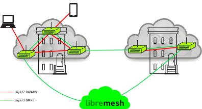
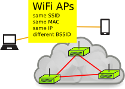
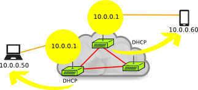
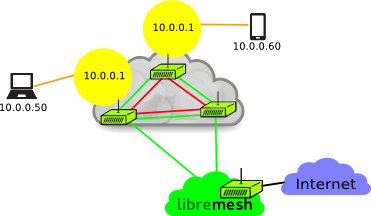

Table of Contents
Objectives to Achieve
-
Enable non-expert users to set up a mesh network and perform basic configuration and management via a web interface usable on smartphones
-
Encourage non-expert users to empower themselves deepening their technical understanding of mesh networks
-
Scalability
-
Network segmentation
-
Layer 2 roaming inside certain areas
-
Smart gateway selection with redundancy and possibility of user-choice
-
Compatibility of most of the existing scenarios
-
A single firmware image for all of your network (for ground level, for backbone, for companies, for quick deployments, etc.)
The Basics
The network architecture designed for LibreMesh is based on two layers:
Cloud layer 2
The cloud layer 2 uses the dynamic routing protocol BATMAN-ADV
Network layer 3
The whole network layer 3 uses by default the routing protocol BMX

Mixing layers
By default, all nodes are running both routing protocols (BMX and BAT-ADV), but on different VLANs.[1]. So the routing is isolated by the MAC layer.
|
The BMX VLAN is always the same, so all link-layer connected nodes will see each other. |
|
The BATADV VLAN depends on the cloud identifier which is calculated (by default) using the AP SSID. |
|
The BMX network will be a single one for all of the mesh, but the BAT-ADV network may be split across several clouds. |

This configuration isolates the layer 2 clouds. For instance a neighborhood, a company complex, or a street level hotspot network may choose to isolate their LAN from the rest of the network. However at the same time, they will be able to reach the rest of the nodes using the layer 3 routed network.
Roaming will be available inside the cloud, so TCP sessions, video streaming, or even a SIP call can be done while moving around. On the other hand, thanks to layer 3 segmentation, the common problems found in a layer 2 bridged network — such as Broadcast storms or DHCP nightmares — will not disturb the correct operation of the network.
|
Everything is automatic and transparent for the end user. |

The Details
WiFi Access Points of the same cloud share common parameters:
-
The SSID (the WiFi AP identification name)
-
Special anycast.[2] IPv4 and IPv6 addresses
-
A special anycast MAC address
-
The DHCP/RA server to provide valid IPs from the cloud to the clients.
Thus a client attached to an AP can move around the mesh without the need to renew their IP configuration. Even the MAC layer will be the same from their point of view.

|
The DHCP lease file is shared among the cloud to prevent collisions using A.L.F.R.E.D. As long as all nodes share the same anycast MAC/IP, from the client point of view it is fully transparent. The gateway is always the same even though the mesh node (where they are attached) may change. |

When a client wants to go out from the LAN (cloud) to reach the Internet or any other network, it will send the packets to the special anycast gateway address. The node where the client is physically attached will take care of this.
|
An ebtables.[3] rule in the LAN/AP bridge prevents packets sent to the anycast address from propagating through the cloud. The mesh node where the client is associated gets the packet but not the other nodes. |

The packet is routed through the BMX layer 3 network to the best Internet gateway. It may be a node from the same cloud or any other from another cloud far away.
|
BMX has a powerful smart gateway functionality which automatically selects the best Internet gateway node taking into account the available bandwidth. |

|
On the way back the packet will arrive to some node in the cloud but it might not be the same node. Nevertheless the packet will be correctly delivered to the originator. This is because BMX smart gateway uses 1-way tunnels to ensure the selected gateway is used. |